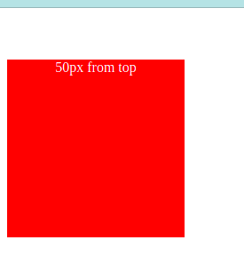
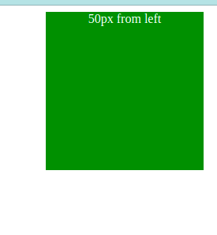
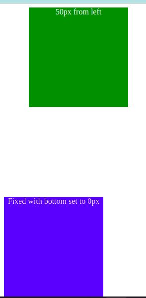

Technical Blog - HTML & CSS
What are the differences between relative, absolute, and fixed positioning?
Position properties controls how elements on websites are positioned. There are 5 values in the position properties
static, relative, fixed, absolute and sticky.
In this article we'll talk about absolute, relative and fixed positioning and how they're different.
For the purpose of understanding these three positions, we'll need to briefly explain how static
positioning works. By default the document flow will automatically assign your element as static,
which is the normal flow of a document. Elements are laid out in blocks stacked from top to bottom
unless we specifically assign positions to them.
Within the position element you can also use the properties top, right, left and bottom to lay out
your elements to where you want them placed.

The top and bottom affects vertical position of an element

right and left affects horizontal position of an element
As mentioned above all elements are "position: static" by default. All of the positions below can be
moved with the properties top, right, left and bottom.
Relative Appears in its original position, One thing to note is that this activates the z-index which
means you can place an element overlapping another elements or underneath other elements. By default
this position will automatically have the z-index property to over lap. It also activates the scope of
absolute positioning mentioned below.
Absolute This value is usually removed from the flow relative to its original OR the closest parent
other than the position static. If there are no parent positions it will move along to the body document
and position from there. Using the properties top, right, left and bottom will position the element
exactly where you want.
Fixed This is when the element is fixed to the viewport (size of screen), meaning if you add
"bottom: 0;" this will place the element on the bottom of the page even if you scroll it will
still be there but wont be in sight if you have a lot of content written and scrolled to the top
of the page. Fixed positions are often used to place a footer at the bottom of the page.

.fixed {
position: fixed;
height: 200px;
width: 200px;
background-color: blue;
text-align: center;
bottom:0;
color:white;
}